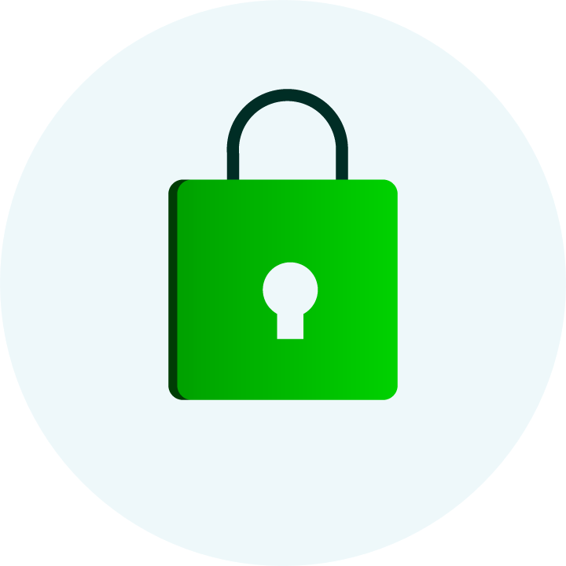

<ion-header mode="ios">
  <div class="header--clean">
    <ion-icon name="close" (click)="onCancel()" routerLink="/tabs/tabs/welcome" routerDirection="back"></ion-icon>
  </div>
</ion-header>


<ion-content>
    <div class="nip--container">

      <div class="nip--header">
        <div class="nip--icon">
          <div>
            
          </div>
          <p>Ingresa tu NIP para ver tus viajes</p>
        </div>
      </div>

      <div class="nip--form">
        <div>
          <ion-item mode="ios">
            <ion-label position="floating" mode="ios">NIP</ion-label>
            <ion-input type="password" name="nip" required></ion-input>
          </ion-item>
        </div>

        <div class="nip--options">
          <div class="nip--checkbox">
            <label (click)="onAutoRenew()">
              <input type="checkbox" />
              <ion-icon [name]="!this.autoRenew ? 'ios-square-outline' : 'ios-checkbox-outline'"></ion-icon>
              <b>No volver a soliciar NIP</b>
            </label>
          </div>
          <a routerLink="/nip-reset">RECUPERAR NIP</a>
        </div>

        <div>
          <ion-button fill="solid" expand="full" shape="round" mode="ios">Ver viajes</ion-button>
        </div>
      </div>

    </div>
  </ion-content>
